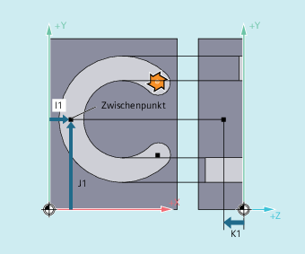
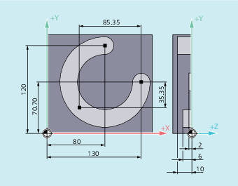

Die mit dem G-Befehl CIP programmierte Kreisinterpolationsvariante ermöglicht die Interpolation von schräg im Raum liegenden Kreisbögen.
Der Kreisbewegung wird durch den Zwischenpunkt und den Endpunkt der kreisförmigen Kontur beschrieben.
Die Verfahrrichtung ergibt sich aus der Reihenfolge Anfangspunkt → Zwischenpunkt → Endpunkt.

| Kreisinterpolation über Zwischenpunkt | |
Wirksamkeit: | modal | |
| Kreisendpunkt in kartesischen Koordinaten Abhängig von der aktuell gültigen Maßangaben-Einstellung | |
| Interpolationsparameter zur Angabe der Kreiszwischenpunkt-Koordinaten in Richtung X, Y, Z Abhängig von der aktuell gültigen Maßangaben-Einstellung Hinweis | |
| Hinweis |
Die Voreinstellungen Bei aktiver Kettenmaßangabe |
| Hinweis |
Technologie DrehenDie Durchmesserprogrammierung des Interpolationsparameters für die Planachse wird bei der Kreisprogrammierung mit |
Für die Herstellung einer schräg im Raum liegenden Kreisnut wird ein Kreis über Zwischenpunktangabe mit 3 Interpolationsparametern und Endpunkt mit ebenfalls 3 Koordinaten beschrieben.
| Programmcode | Kommentar |
|---|---|
| N10 G0 G90 X130 Y70.70 S800 M3 | ; Startpunkt anfahren. |
| N20 G17 G1 Z-2 F100 | ; Zustellen des Werkzeugs. |
| N30 CIP X80 Y120 Z-10 I1=IC(-85.35) J1=IC(-35.35) K1=-6 | ; Kreisendpunkt und Zwischenpunkt. |
| ; Koordinaten für alle 3 Geometrieachsen. | |
| N40 M30 | ; Programmende. |
| Programmcode | Kommentar |
|---|---|
| ... | |
| N125 G1 G90 X40 Z-25 F0.2 | |
| N130 CIP X70 Z-75 I1=IC(26.665) K1=IC(-29.25) | ; Interpolationsparameter I1 für Planachse muss im Radius programmiert sein. |
| ; bzw. | |
| ; N130 CIP X70 Z-75 I1=46.665 K1=-54.25 | |
| N135 G1 Z-95 | |